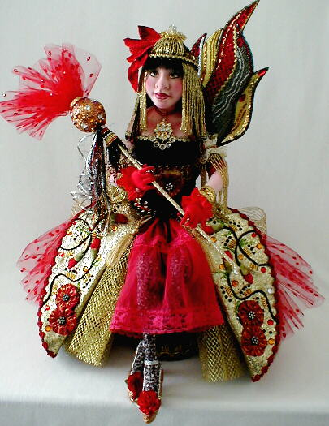
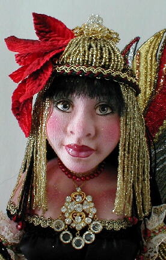

"Bellarosa......Queen of the Fire Faeries"
Second Place Winner at Santa Fe Doll Art 2000,
(in the "Cloth over Sculpted Surface" Category)

Bellarosa was originally sculpted in polymer clay. From the original head and shoulderplate, I made a
set of plaster molds and then poured them in Flumo. Once set, dried and cleaned, the face and shoulders
were then covered with cotton knit fabric and detailed with a combination of pens, pencils and powdered
colors. Her eyes are painted with acrylics and high gloss water-based lacquer. She is part of a limited
edition that includes the original "Isabel", from which she was developed. The original Isabel travels
with me to workshops where I teach the "cloth over papier mache" technique.

The original concept for "Bellarosa" arose on a hot summer night as I sat in the front garden of a dear
friend in Tulsa, Oklahoma. As I watched with great fascination, fireflies gently floating in the trees
and bushes around me, like a thousand tiny dancing stars come to earth. I could almost
feel the presence of a fire fairy. Surely, there must be someone in charge of keeping the tiny
lights of the fireflies aglow. I pictured the fire fairy queen hidden in a lovely cluster of red flowers,
waiting patiently for her small charges to pass by. By the power of her lovely fire wand, they could continue
to regenerate their magic light and turn the garden into an earthly galaxy of tiny moving stars.
The queen holds court over other fire fairies. Each one is a monochromatic study, whose color is
determined by her hiding place. Green fairies hide in leafy green trees and shrubs, while fairies of other
colors hide in flowers and bushes that will camouflage them appropriately. As with the fireflies, the
Fire Fairies only appear on hot, windless summer nights. The rest of the time, they stay high above us,
where they work tirelessly to keep the stars alight.
Go to the Santa Fe 2000 Page
Email me with your questions or comments